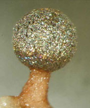

|
Life in the Forest Canopy |
|
An
iAdventure
learning activity about scientific research in the
Great
Smoky Mountains National Park, with local parallel activities for students.
Designed
for students in grades 7-10.

Created by Trish
Smith
Warrensburg
R6 Schools, Missouri
last updated November 13, 2007
|
Information Page |
|
iAdventure! |